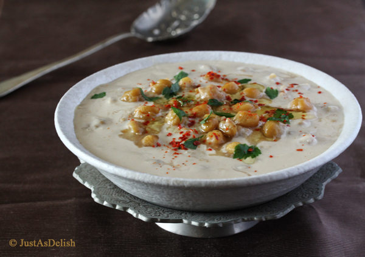

Musabaha

Description
Musabaha is basically a rough or rustic form of hummus. Take chickpeas, tahini, garlic, lemon and cumin. These are the basic ingredients for hummus and also for musabaha. However, with musabaha, the chickpeas remain whole and are not maltreated with a hand blender. Chickpeas swimming in tahini sauce, so to speak.
Ingredients
- Chickpeas
- Hot water
- Tahini
- Olive oil
- Lemon juice
- Spice (addition)
- Parsely (addition)
Steps
- Mince the clove of garlic in a bowl.
- Add the salt to the garlic. Then add some of the olive oil,the tahini and lemon juice.
- Gently mash around half of the chickpeas with the back of the fork (don't pulverise them) just enough to
break them up
- Plate up and drizzle parsely and your prefered spice
Home